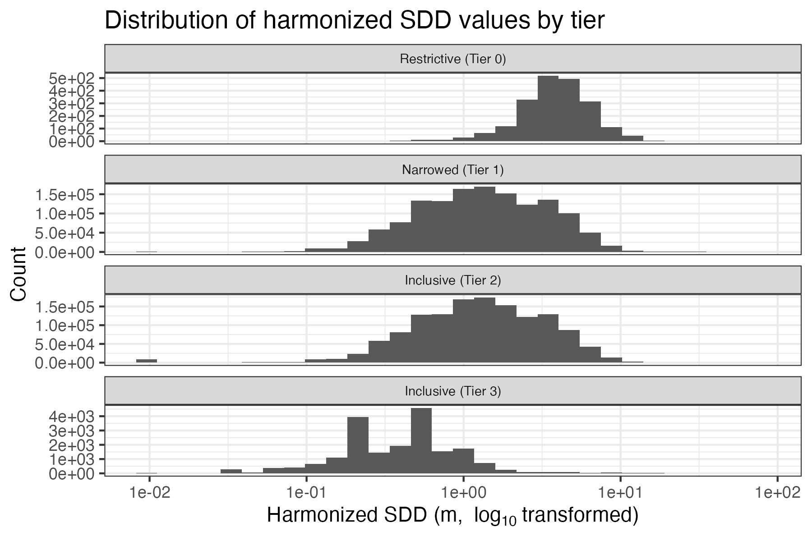

7 Secchi harmonization process
Following the completion of the {dataRetrieval} download process described previously, the pipeline contains raw WQP data for each parameter of interest. Before we harmonize each parameter we run through a series of universal “pre-harmonization” steps, which ensure that the datasets are appropriately formatted when entering their harmonization routines.
The text below first walks through the pre-harmonization steps for the raw Secchi disk depth dataset and then delves into the specifics of the harmonization process.
7.1 Pre-harmonization of the raw Secchi WQP dataset
At the start of the pre-harmonization process the raw Secchi disk depth WQP dataset contains 3.1 million rows.

7.1.1 Missing results
Next, records that have missing data are dropped from the dataset. Several criteria are used when checking for missing data. If any of the below criteria are met the row is flagged as missing:
- Both the result column and detection limit column had
NAdata - Result, result unit, activity comment, laboratory comment, and
result comment columns are all
NA - The result comment column contains any user-provided text indicating
a missing value, currently including:
analysis lost,not analyzed,not recorded,not collected, orno measurement taken
0.7 thousand rows are dropped, resulting in a final count of 3.1 million.

7.1.2 Filter Status
The final step in pre-harmonization is to filter the
ResultStatusIdentifier column to include only the following statuses:
"Accepted""Final""Historical""Validated""Preliminary"NA
These statuses generally indicate a reliable result having been reached,
however we also include NA in an effort to be conservative. More
specifically, when making decisions for this and other columns we
occasionally retain NA values if removing the records would otherwise
drop 10% or more of the available data.
This step removes 9.2 thousand rows of data, leaving it with 3.1 million rows remaining.

7.2 Harmonization-ready Secchi dataset
Once ready for harmonization, the Secchi-only dataset contains the
following user-defined characteristicNames: Depth, Secchi disk depth,
Depth, Secchi disk depth (choice list), Secchi Reading Condition (choice
list), Secchi depth, Water transparency, Secchi disc.
These names are chosen in order to select for only those measurements that pertain to Secchi disk depth measurements.
7.2.1 Filter for water media
We next ensure that the media type for all SDD data is
"Surface Water", "Water", "Estuary", or NA. 2075 rows are
removed. The final row count after this is 3.1 million.

7.2.2 Document and remove fails
In this step we filter out records based on indications that they have failed data quality assurance or quality control for some reason given by the data provider (these instances are referred to here as “failures”).
After reviewing the contents of the ResultCommentText,
ResultMeasureValue_original (an unedited duplicate of the
ResultMeasureValue field), and ResultDetectionConditionText columns,
we developed a list of terms that captured the majority of instances
where records had failures or unacceptable measurements. We found the
phrasing to be consistent across columns and so we searched for the same
(case agnostic) terms in all four locations. The terms are: “error”,
“fail”, “invalid”, “no result”, “questionable”, “suspect”, “unable”,
“reject”, “no data”, “Not Reported”, “no reading”, “-99”, “upper
quantitation limit”.
Below are pie charts that break down the number of failure detections by column. Note that the plotting below is automated so if one or more of the columns listed above are not plotted, this indicates that the column(s) did not return any matches for the failure phrases. Also note that a single record can contain multiple failure phrases; therefore, failure phrases are not mutually exclusive.

7.2.3 Clean special characters
We next address the issue of special characters in the Secchi disk depth
measurements. Some entries in the dataset contain special characters at
the beginning of the measurement value, which need to be removed for
proper numerical analysis. We do this by first identifying measurements
with the special characters -, *, or =. Then we remove those
special characters and convert the values to numeric values and note
which records were modified.
This should not result in a change in rows but we still check: 0 rows
are removed and 3.1 million rows remain.

7.2.4 Clean values with “less than” data
In this step, we find and clean records containing < symbols. We first
identify records where the numeric value is missing (NA) in the
ResultMeasureValue column. We then look for the presence of a <
symbol followed by a number in the ResultMeasureValue_original column.
If these conditions are met and there are no alphabetical characters in
the original value, we extract the numeric value after the < symbol.
This extracted value is then used as the harmonized value for the
measurement.
This step is one component of the rules defining our mdl_flag column,
so it is labeled here as “Clean MDLs” (“MDL” = Method detection limit).
This should not result in a change in rows but we still check: 0 rows
are removed and 3.1 million rows remain.

7.2.5 Clean values with “greater than” data
We next proceed to clean up values reported as “greater than” a certain measurement. This is similar to the proceeding step of cleaning up “less than” data.
The ResultMeasureValue column was checked for all three of the
following conditions:
- Numeric-only version of the column was still
NAafter “<” removal - The original column text contained a number
- The original column text contained a “>”
- The original column text did not have any letters in it
We then used the numeric value (without “>”) as the record’s
harmonized_value moving forward.
This should not result in a change in rows but we still check: 0 rows are removed and 3.1 million rows remain.

7.2.6 Gap filling harmonized values
After cleaning up the “greater than” values, we proceed to fill missing
values in the harmonized_value column using Secchi disk depth
information present in ActivityBottomDepthHeightMeasure.MeasureValue,
ActivityDepthHeightMeasure.MeasureValue, and their corresponding units
columns.
In order to gap-fill the harmonized_value column from the
ActivityBottomDepthHeightMeasure we required both “bottom text” and no
“negate text” to be present and for ActivityDepthHeightMeasure we
required no “bottom text” present but instances of “negate text” was
okay. “Bottom text” was defined as when the ActivityCommentText,
ResultCommentText, and ResultMeasureValue columns contained language
that referenced the “bottom” of the water body. Mentions of “bottom”
alone were taken as a positive indicator that sampling hit the bottom,
while the following other strings were used to negate such indication
(“negate text”): “no bottom”, “not.bottom”, ”couldn’t.bottom”, “could
not.bottom”, ”unable to.bottom”, “too deep”, “too shallow”, “doesn’t
reach”, “did not reach”, “blocked”, “hidden”, “disappeared”, “hose
frozen”, “pump frozen”, “cable not long enough”, “cord not long enough”,
“won’t stay on bottom”, “current too strong”, “too windy”, “fast
current”, “flooding”, “readings not on bottom”, “measurements not
collected”, “sample taken at”, “depth too great”, “can’t get true
bottom”, “seen on bottom: no”, “bottom reading not taken”, “afraid to
touch bottom”, “forgot bottom reading”, “didn’t hit bottom”, “did not
hit bottom”, “vegetation blocks”, “turbid”, “probe not on bottom”,
“sonde.not.bottom”, “hydrolab not on bottom”, “profile not taken to
bottom”, “unable to collect bottom”, “bottom.not.collected”,
“bottom.not.recorded”. The strings listed here include the regex
symbols of “.” for a single-character wildcard and “.*” for a greedy
wildcard of any character length.
After this, we flagged these records with the approx_flag, indicating
the source of the gap filled values:
0: Value and units not adjusted (originalharmonized_valueis notNA)1:harmonized_valuefilled usingActivityDepthHeightMeasurecolumn2:harmonized_valuefilled usingActivityBottomDepthHeightMeasurecolumn
This should not result in a change in rows but we still check: 0 thousand rows are removed and 3.1 million rows remain.

7.2.7 Drop unresolved NA measurements
The goal of the preceding three steps was to prevent records with
seemingly missing measurement data from being dropped if there was still
a chance of recovering a usable value. At this point we’ve finished with
that process and we proceed to check for remaining records with NA
values in their harmonized_value column. If they exist, they are
dropped.
51.7 thousand rows are removed. The final row count after this is 3 million.

7.2.8 Harmonize record units
The next step in SDD harmonization is converting the units of WQP records. We create the following conversion table, which is used to translate units provided in WQP into meters (m):
| harmonized_units | conversion |
|---|---|
| m | 1.0000 |
| ft | 0.3048 |
| cm | 0.0100 |
| in | 0.0254 |
| mm | 0.0010 |
| feet | 0.3048 |
| meters | 1.0000 |
| mi | 1609.3400 |
Below is a pie chart that breaks down the different unit codes that were dropped in the unit harmonization process, and how many records were lost with each code.
Additionally we provide a set of histograms of harmonized measurements
by CharacteristicName:

7.2.9 Clean and flag bottom depth data
The next harmonization step involved gap filling the
ActivityBottomDepthHeightMeasure.MeasureValue and
ActivityBottomDepthHeightMeasure.MeasureUnitCode columns.
There are four columns that explicitly contain depth information for a
given WQP entry. Of these columns we are only interested in the
ActivityBottomDepthHeightMeasure.MeasureValue column for Secchi disk
depth because it may be an indicator of the bottom of the water body for
a given WQP entry. Here we harmonize the values in the bottom depth
column. To keep this data in line with the rest of the data in AquaSat
v2, the other harmonized depth columns are filled with NA since Secchi
disk depth is a discrete depth measurement. Those harmonized depth
columns are:
harmonized_top_depth_valueharmonized_top_depth_unitharmonized_discrete_depth_valueharmonized_discrete_depth_unit
In order to gap fill bottom depths we searched for records with
previously identified bottom-related language and no information in the
bottom depth value and unit columns. These entries were flagged using
the depth_flag column, where 0 = bottom depth value not adjusted and
no indication that Secchi disk hit bottom, and 1 = bottom depth value
back filled with harmonized_value due to indication that Secchi disk
hit bottom.
If an entry was flagged, then the harmonized_bottom_depth_value column
was filled using the harmonized_value and the
harmonized_bottom_depth_unit column was filled using the
harmonized_units column. Finally, the units for the harmonized bottom
depth values were converted to meters (m).
This should not result in a change in rows but we still check: 0 thousand rows are removed and 3 million rows remain.

7.2.10 Filter methods
After cleaning and standardizing the Secchi bottom depth measurements, we proceed to filter the analytical methods used.
We check the ResultAnalyticalMethod.MethodName column for names that
indicate non-Secchi disk depth measurements. Phrases used to flag and
remove unrelated methods for Secchi disk depth data are: “10200G”,
“2320”, “2540”, “2550”, “alkalin”, “calculation”, “chemical”,
“chlorophyll”, “coliform”, “conductance”, “laboratory calculation”,
“meteorological”, “nephelometry”, “nitrate”, “no information exists for
method”, “not available”, “other or unknown procedure”, “qa”,
“temperature”, “total suspended solids”, “unknown”, “unkown”,
“unspecified”.
This process drops 11.6 thousand rows leaving 3 million remaining.

7.2.11 Tier methods
We then tiered the data using information on the time of day of the
measurement, whether a viewscope was used, and whether the
harmonized_value was gap filled.
Our tiers were informed by Davies-Colley et al. (1993). Specifically, 10am-2pm represents the ideal time range for measurements due to consistent lighting conditions and use of a viewscope can significantly improve measurement accuracy by reducing surface glare and wave effects. These considerations help assess the quality and reliability of the Secchi disk depth data across different measurement conditions.
We tiered the data as follows:
| Tier | Name | Description | SDD details |
|---|---|---|---|
| 0 | Restrictive | Data that are verifiably self-similar across organizations and time-periods and can be considered highly reliable and interoperable | Time was reported between 10am-2pm and was not 11:59:59. Method indicates use of viewscope |
| 1 | Narrowed | Data that we have good reason to believe are self-similar, but for which we can’t verify full interoperability across data providers | Either time reported was between 10am-2pm and was no 11:59:59, OR method indicates use of viewscope, but not both |
| 2 | Inclusive | Data that are assumed to be reliable and are harmonized to our best ability given the information available from the data provider. | Time not reported/was outside of 10am-2pm/was 11:59:59 and no indication that viewscope was used |
| 3 | Inclusive | Same as above | Data where the harmonized_value is gap filled from other columns in the record |
This should not result in a change in rows but we still check: 0 rows are removed and 3 million rows remain.

7.2.12 Flag
After cleaning and tiering the Secchi data, we conduct a final flagging sweep. This process creates several flags to provide additional context and quality indicators for each measurement.
We create four types of flags:
mdl_flag: This flag indicates whether the value was corrected 1) because original WQP record contained a “<” character or, 2) because the original value was less than 0.01m.flag 0: Value greater than 0.01m with NO<character in original entryflag 1: Value greater than 0.01m with<character in original entryflag 2: Value less than or equal to 0.01m with NO<character in original entry; final value adjusted to to 0.01mflag 3: Value less than or equal to 0.01m with<character in original entry; final value adjusted to 0.01m
greater_flag: This flag indicates 1) whether the value was corrected because the original WQP record contained a “>” character and 2), whether theharmonized_valueis greater than 44m (Larson, 1972). Depths greater than 44m are flagged as potentially anomalous.flag 0: Value less than 44m with NO>characterflag 1: Value less than 44m with>characterflag 2: Value greater than 44m with NO>characterflag 3: Value greater than 44m with>character
field_flag: Indicates whether theActivityCommentTextorResultCommentTextcolumns contained language indicating environmental conditions, i.e.: “wind”, “chop”, “choppy”, “precipitation”, “rain”, “calm”, or “clear”.flag 0: Environmental indicator present in commentflag 1: No environmental indicator present in comments
misc_flag: The miscellaneous flag captures various other conditions that might affect data quality or interpretation.flag 0: No miscellaneous condition flaggedflag 1: Bottom of water body indicatedflag 2: Harmonized value is greater than the bottom depth valueflag 3: Special characters removed (-,=.*)
This should not result in a change in rows but we still check: 0 rows are removed and 3 million rows remain.

7.2.13 Remove unrealistic values
Before finalizing the dataset we removed Secchi disk depth values that were beyond a realistic threshold because they were likely erroneous. We used 80m as our cutoff for removal based on Gieskes et al. (1987).
Additionally, we convert values less than 0.01m to 0.01m based on observed Secchi disk depth records (NALMS, 2024).
These changes improve the overall reliability of the dataset by minimizing the amount of data with potential inaccuracies and preserving measurements that correctly describe the aquatic environment.
This process drops 1819 rows leaving 3 million remaining.

7.2.14 Aggregate simultaneous records
The final step of Secchi disk depth harmonization is to aggregate
simultaneous observations. Any group of samples determined to be
simultaneous are simplified into a single record containing the mean and
coefficient of variation (CV) of the group. These can be either true
duplicate entries in the Water Quality Portal (WQP) or records with
non-identical values recorded at the same time and place and by the same
organization (field and/or lab replicates/duplicates). The CV can be
used to filter the dataset based on the amount of variability that is
tolerable to specific use cases. Note, however, that many entries will
have a CV that is NA because there are no duplicates or 0 because the
records are duplicates and all entries have the same harmonized_value.
We identify simultaneous records to aggregate by creating identical
subgroups (subgroup_id) from the following columns: parameter,
OrganizationIdentifier, MonitoringLocationIdentifier,
MonitoringLocationTypeName, ResolvedMonitoringLocationTypeName,
ActivityStartDate, ActivityStartTime.Time,
ActivityStartTime.TimeZoneCode, harmonized_tz,
harmonized_local_time, harmonized_utc, ActivityStartDateTime,
harmonized_top_depth_value, harmonized_top_depth_unit,
harmonized_bottom_depth_value, harmonized_bottom_depth_unit,
harmonized_discrete_depth_value, harmonized_discrete_depth_unit,
depth_flag, mdl_flag, approx_flag, greater_flag, tier,
field_flag, misc_flag, harmonized_units. This selection limits the
columns included in the final dataset, but we also provide a copy of the
dataset prior to its aggregation (pipeline target
p3_sdd_preagg_grouped), and including the subgroup_id column, so
that users can use the non-aggregated data as well and make joins
between dataset versions.
The final, aggregated values are presented in the harmonized_value and
harmonized_value_cv columns. The number of rows used per group is
recorded in the harmonized_row_count column.
0.3 million rows dropped leaving 2.7 million remaining in the final harmonized and aggregated Secchi disk depth dataset.

7.2.15 Harmonized Secchi disk depth
At this point the harmonization of the Secchi disk depth data from the WQP is complete and we export the final dataset for use later in the workflow.
Below is a final set of histograms showing the distribution of
harmonized measurements (top) and CVs (bottom) broken down by tier
after aggregating simultaneous records.
